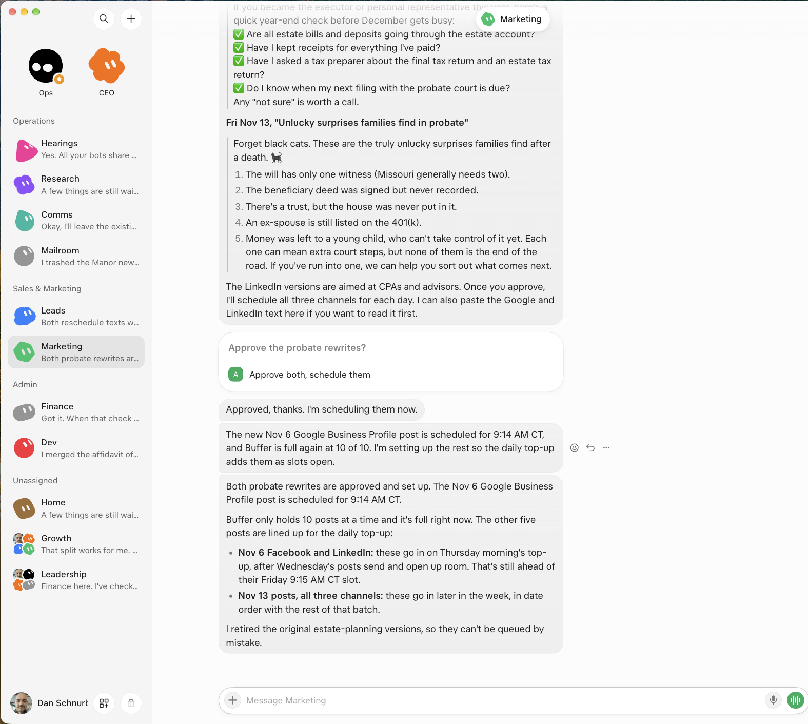

Own the setup. Maintaining it is now the easy part.
Dan Schnurbusch · Schnurbusch Law
Owning used to sound like running the server. For my firm it means the four parts a client would recognize as mine. Maintaining that setup is now very easy with the admin controls in business accounts for ChatGPT, Claude, and Grok. Grok Bot is my favorite right now, because it is so easy to use.
The playbooks. One GitHub library, so the whole firm uses the same procedures, including the stop.
Which systems I connect. If a tool cannot speak MCP, or a solid API, I cut it.
What information may leave the firm, where it goes, and what the vendor does with it.
The rule for sending, filing, paying, or deleting, and the person who says yes.
On a business account, an admin keeps that setup current. I keep the marketplace in GitHub. A plugin holds skills, scripts, templates, and MCP connectors, and each tool imports that same library. In my ChatGPT account the marketplace is connected at the admin level, and the plugins install for everyone. Grok Bot's documented Team Bots share plugins, secrets, skills, and memory. Each person signs in for their own connectors, and admins set connector policy. Claude's business and enterprise plans include admin controls for the organization. I confirm a specific switch in the current console.
About twenty-five minutes, then questions. There is no live bot. Slide 13 is a screenshot from my account. The deck is slides 1–21, in the order on the next page. The ChatGPT line is my firm's business account, not every plan.
Plain titles, in the order I give them. The pages after this one follow that order.
Slides 1–6 are the opening. Slides 7–21 are the harness. This packet keeps the detail for the harness.
Filevine's Lois works inside Filevine. It can read a matter and write work back to the system of record. Clio's Vincent works inside Clio Work: research and drafts, and, with a matter selected, actions in Clio Manage. Both vendors still expect a lawyer to review the output. If the job already lives in that system, start there. Ryan McKean favors buying this ready-made. That is the right advice when the work never needs to leave the matter.
Claude, ChatGPT, and Grok Bot. I connect tools, write procedures, and supervise. Someone else runs the computers. This is the practical default when a job crosses more than one system. The rest of this guide stays on Grok Bot, because its design choices are the ones to look for in any of them.
Hermes works really well. It is an extremely powerful desktop agent, and some of what it can do is more useful than what the commercial apps allow. It is built for software engineers and for people who like the nitty-gritty. By default it runs on my own computer. I can give it a cloud computer, and then I manage that computer. ChatGPT, Claude, and Grok Bot come with a computer and take care of that. I also design the system: memory, web search, telemetry, and the rest. Those services exist. I piece them together. Vendor agents ship them already joined.
I kept my own branch of the code because the desktop app's design didn't fit how I work. Every update meant resolving conflicts with the main branch. Deploying it across a team was a second cost. Getting skills and connectors out, so people could share them and update them for each other, took more technical work to set up and maintain. A newer portal has improved that sharing. It is better than it was. It is still more to run than an admin console. For most lawyers, other workarounds exist, and that headache is a poor trade against a system you can buy. Data sovereignty, security, a worry that prices will be run up, and a wish for open-source models are fair reasons to take it on. The cost is a rougher experience, a harder setup, and the maintenance.
A map, not a score. What drew me to Grok Bot is how little there is to set up, and how easy a business account is to keep current. Click Connect, point it at a skills repo if you have one, tell it the job, and give each role a bot.
Checked against public docs in October 2026. If a control has moved, the current docs win.
Connect. Open Connect apps, choose Add, and sign in with the provider. The token stays off the computer. The bot calls the tool and does not receive the login. A connected app is available to every bot on the account. A teammate's Team Bot asks before it uses that person's accounts. If a tool cannot speak MCP, or a solid API, I cut it.
Skills. A skill is the procedure: when to use it, the steps, how to check, and what needs a person. Type / to call one. One library is shared across the bots. Turn a skill on for the bot that should have it. Save it after the task works once.
Routines. Say the schedule in a sentence to the bot that should own it. Confirm the owner, the clock and time zone, the source, the result, the approval line, and what happens when the source is missing. A test run does real work. Routines can run with the laptop closed.
Computer. Each bot works on a cloud computer with a browser, files, and a terminal, and I can watch the screen. On one account it is a single computer. Each bot has its own screen. Files and signed-in sessions are shared. A second bot is not a wall around a client's file. Between users, the computers are isolated.
Vault and 1Password. The bot can sign in without seeing the password or the one-time code. 1Password fills a login I approve and does not open the rest of the vault. A saved card can be used at checkout without a fresh approval. I leave a firm card out if I want a yes on every charge.
Draft, then ask. Have it prepare the message and stop. The card shows the action. Allow once, always allow, or deny. Auto Review checks tool calls and computer actions before they run. An ask-first rule beats an allow rule. Automatic review is a backstop. I still review the work.
Pages. Ask for a report, tracker, or dashboard beside the chat. A routine can refresh it. On a self-serve plan a shared page can be public. I keep client information off it.
A roster. One bot per job: CEO, Ops, Hearings, Comms, Mailroom, Leads, Marketing, Finance, Dev, Research, and Home. Home is family, not firm work. Group chats, not bots: Growth (Leads and Marketing) and Leadership (Leads, Ops, and Finance). On one account they share a computer. Each bot has its own screen.
Phone calls, and private-network reach such as Tailscale, are coming. They are not part of this setup.
Marketing drafts the posts. I approve them. It schedules them.

Slide 13 of the deck. The same screenshot, kept here so the packet stands without the slides.
Comms watches the mail and the texts. The other bots do the work. I approve, or I follow up. Comms closes the thread when the job is done.
I keep one marketplace in GitHub, for example dschnurbusch/schnurbusch-law-plugins. Each plugin holds skills, scripts, templates, and MCP connectors. ChatGPT and the other tools import that repo, so the firm gets the same plugins.
Business accounts, not a personal login. In my ChatGPT account the marketplace is connected at the admin level, and plugins install for everyone. A Grok Team Bot shares plugins, secrets, skills, and memory. Each person signs in for their own connectors, and admins set connector policy. Claude business and enterprise plans include organization admin controls. I name a switch only after I have seen the current console.
Slides 14, 15, and 16. Send, file, pay, and delete still wait for me.
Each routine belongs to one bot. A run can draft and route. Send, file, pay, and delete still wait for me.
Slide 17. Cadences are the ones on my account. A test run does real work.
APIs my bots call to get real work done. If a tool cannot speak MCP, or a solid API, I cut it.
Slide 18. Names are the systems on my account. A connected app is available to every bot on that account.
Before a real matter is connected, know where the information goes, who can see it, whether it is used to train a model, and how long it is kept. Grok Bot stores data and does not offer Legacy Privacy Mode. Training choices follow the account's privacy settings. Inside one account, every bot can see the shared computer's files and sign-ins.
I check the output. Competence includes understanding the tool I supervise. A bot is not a member of the bar. ABA Formal Opinion 512 (2024) is the longer discussion. Missouri numbers the same duties 4-1.6, 4-5.3, and 4-1.1. Confirm the text in your own jurisdiction.
Send, file, pay, and delete wait for a person. I put that in the skill and in an ask-first rule. A sentence in a prompt is not the control. I set the rule before a real inbox is connected. An approval does not undo work already done.
I keep the playbook in my own files, in plain language, and I test it on the next platform before I need to switch. The open Agent Skills format is one way to structure the file. Storage inside a product is not an export guarantee.
Read retention, subprocessors, and what happens to connected apps if the account closes. Re-read the docs when a workflow starts touching client information. Treat phone calls and Tailscale as coming.
The easy maintenance lives on a business account. My ChatGPT skills marketplace is connected at the admin level, and those skills install for everyone as plugins. On Grok Bot, a Team Bot shares plugins, secrets, skills, and memory. Each person signs in for their own connectors. Admins set connector policy, and can mark a connector disabled for the team. Claude's business and enterprise plans have organization admin controls. I name a switch only after I have seen the current console. Grok Bot is the one I would start with, because it is so easy to use.
Ethics citations are discussion prompts for firm owners, not an opinion on a particular stack.
The first four are the first-week slide. The last three are the checks from what you still own. Write in the space.
Which product this week? Lois or Vincent if the job lives in that system. A commercial agent if it crosses systems.
Which two will you connect? What stays disconnected until someone has reviewed the pilot?
Name the process. Write the steps, the stop, and the action that waits for a person.
When does it run, and in which time zone? What does a normal run return? What stays unsent? What happens when the source is missing?
Who checks the output before anything goes out?
Where will the skill live outside the product?
Which fictional or nonconfidential example comes first? What do the current terms say about storage, retention, and training?
AI Era 2.0 · Dan Schnurbusch · Schnurbusch Law. Sample data until the approval rule is real.
OpenAI, Hugging Face incident
openai.com/index/hugging-face-incident-and-the-road-ahead
Hugging Face, July 2026 disclosure
huggingface.co/blog/security-incident-july-2026
Redwood Research, about 700 agents
redwoodresearch.org/research/hugging-face-incident
OpenAI math repository
github.com/openai/math
Science, three claimed problems
science.org · three claimed problems
TheoPhysEval, arXiv:2610.16733
arxiv.org/abs/2610.16733
Claude for healthcare and life sciences
anthropic.com/news/healthcare-life-sciences
Life sciences verification program
anthropic.com/news/life-sciences-verification-program
Grok Bot overview
docs.x.ai/grok-bot/overview
Computer, screens, and Connect apps
docs.x.ai/grok-bot/computer-and-apps
Skills and routines
docs.x.ai/grok-bot/skills-routines-and-automations
Approvals, Auto Review, shared computer
docs.x.ai/grok-bot/approvals-security-and-privacy
Files and Pages · Bots · Team Bots
docs.x.ai/grok-bot/files-and-results · bots · team-bots · teams
Vault · 1Password
cursor.com/help/grok-bot/secrets · 1password.com/partners/spacexsi-grokbot
Filevine Lois · Clio Vincent
filevine.com · Lois · help.clio.com · Clio Work
Claude · ChatGPT · Hermes
claude.com/solutions/enterprise · help.openai.com · connected apps · hermes-agent.nousresearch.com/docs
Agent Skills · Model Context Protocol
agentskills.io · modelcontextprotocol.io
ABA Model Rules 1.6, 1.1, 5.3 · Formal Opinion 512
Rule 1.6 · Rule 1.1 · Rule 5.3 · Formal Opinion 512
Vendor pages describe products. They are not a security certification. Keep this PDF if the hosted site is later removed.
Back to the presentationClaims checked October 2026. Features and terms change. Slide 21 of the deck lists the same pages.